KNOT
A Modular Furniture System — BFA Capstone
Overview
A modular chair system born from a semester of industry research — designed from the ground up for hybrid production, prototype-validated, and built to ship flat.
Phase 1 — Research
Before designing anything, I spent a semester mapping the furniture industry. The US market is a $193B landscape broken into four tiers: Mass-Market, Mid-Market, Boutique Craft, and Hybrid Custom. Most furniture lives at the extremes — cheap and scalable, or handcrafted and expensive. The 10% hybrid-custom segment is the least served, but research showed it sits at the sweet spot across five axes: Craftsmanship · Cost · Output · Customization · Sustainability.
I conducted site visits and interviews with Columbus-area furniture makers. The deepest case study was A Carpenter's Son Design Co. — a Columbus hybrid fabricator that started selling cutting boards as a fundraiser and pivoted to heirloom furniture. Their workflow: Design Proposal → Fabrication (4 fabricators, 1 piece per maker) → Finishing → Onsite Install. No automation, but technology used selectively to improve workflow without sacrificing craft.
Interviews: Josh Scheutzow (Founder) · Brad Hosfeld (Lead Designer) · Cain Lackey (Shop Manager) · Ellen Vail (Project Coordinator) — A Carpenter's Son Design Co.; also Hazelwood Millworks · Columbus Furniture Company · MRO Built.
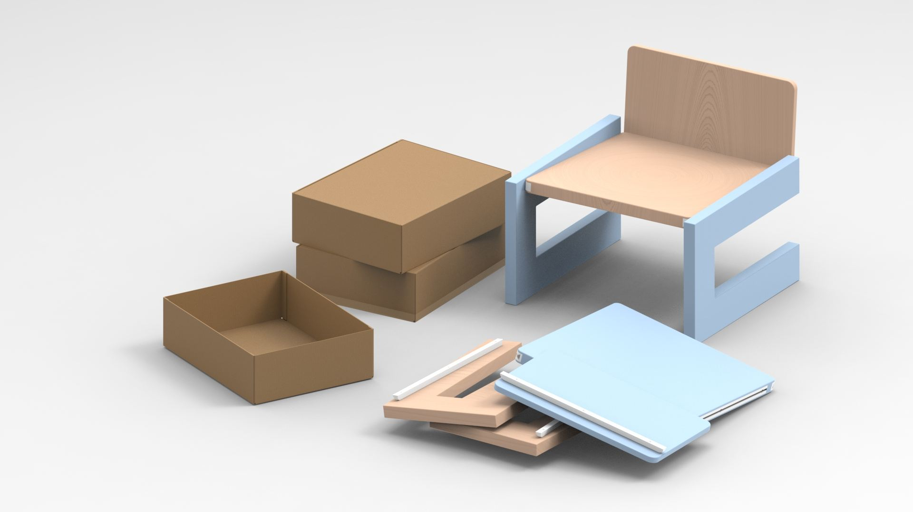
Opportunity spectrum — hybrid-custom convergence of Craftsmanship, Cost, Output, Customization, Sustainability
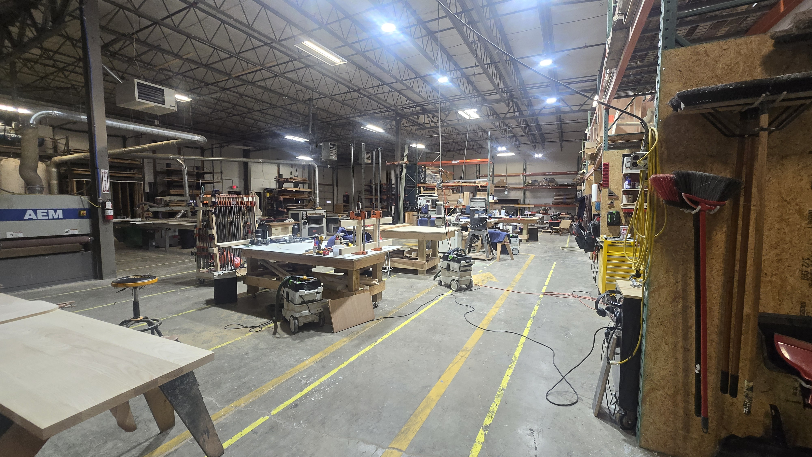
A Carpenter's Son Design Co. — primary case study, Columbus OH
The bottleneck in hybrid production isn't materials or machines — it's joinery complexity. The design opportunity: a connection system strong, repeatable, tool-minimal, and CNC-compatible.
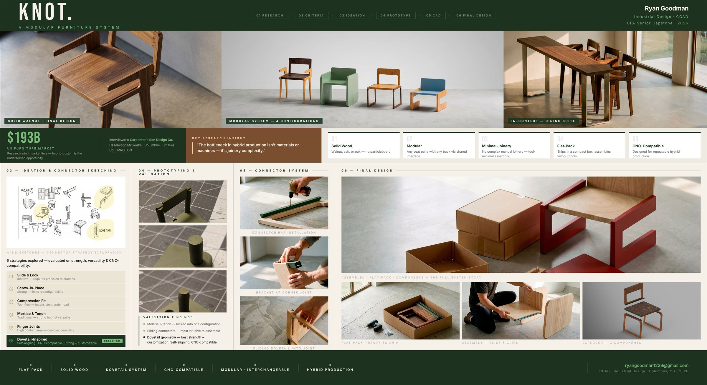
Design Criteria
Research translated directly into requirements:
- High-quality solid wood construction
- Modular, interchangeable components with shared interfaces
- Minimized complex manual joinery
- CNC-compatible geometry for repeatable hybrid production
- Flat-pack distribution — compact box, reduced shipping volume
Connector Ideation
I explored the full space of connection strategies through sketching: sliding interfaces, slide-and-lock mechanisms, compression concepts, interlocking geometries, mortise-and-tenon, finger joints, dovetail-inspired geometries, and screw-in-place fasteners.
Prototyping + Validation
Geometry developed in SolidWorks, then 3D-printed rapid prototypes tested each connector approach. Key findings:
- Mortise and tenon: strong but not versatile — locked into one configuration
- Vertical interfacing: strong but limiting
- Sliding connectors: most intuitive for assembly and disassembly
- Dovetail-inspired geometry: best combination of strength and customization — self-aligning, CNC-compatible, visually clean
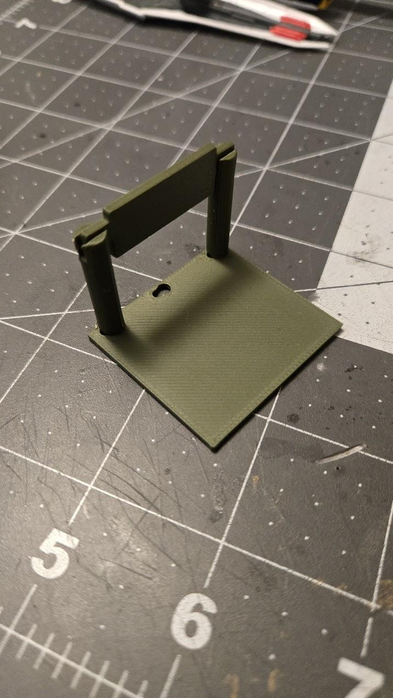
3D-printed iterations — testing geometry, fit, and assembly logic
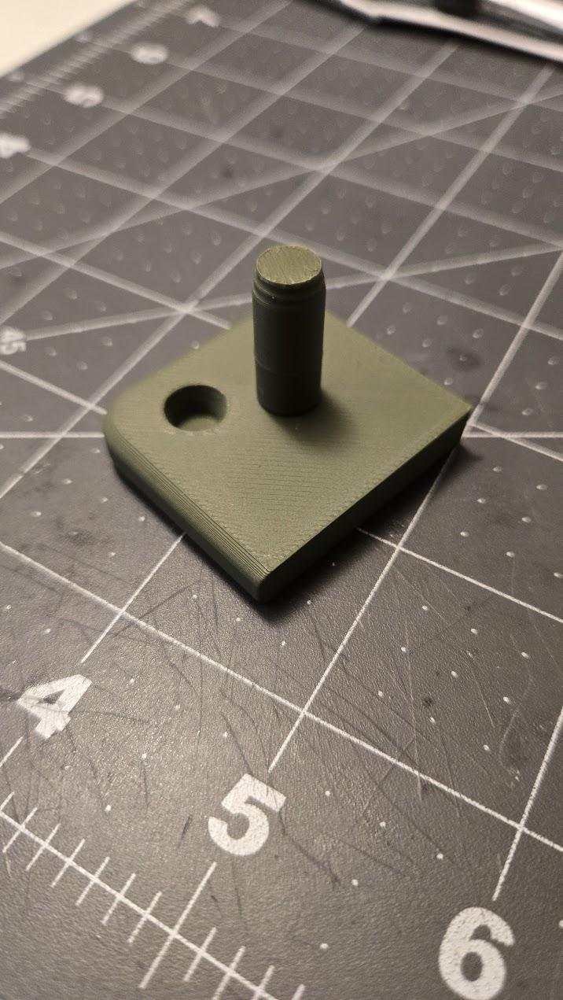
Dovetail connector — self-aligning, CNC-compatible, tool-minimal assembly
The Result
A modular chair system built around a universal dovetail-inspired connector bracket. Seat, backrest, and frame connect through a shared interface — any seat pairs with any backrest. The system ships flat and assembles with minimal tools.
- Flat-pack — compact box, reduced shipping volume
- Precision-fit connectors — no complex joinery, minimal tools
- Interchangeable components — limitless configuration, multiple material options
- Solid wood — walnut, ash, or oak; no particleboard
- CNC-compatible — designed for repeatable hybrid production
Final renders produced in KeyShot with GendoAI for environmental context and photorealism.
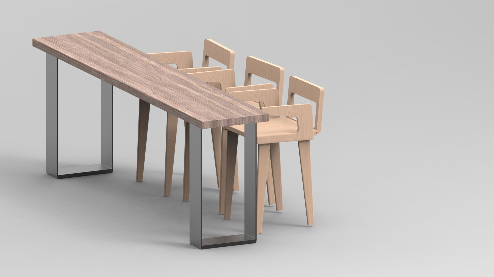
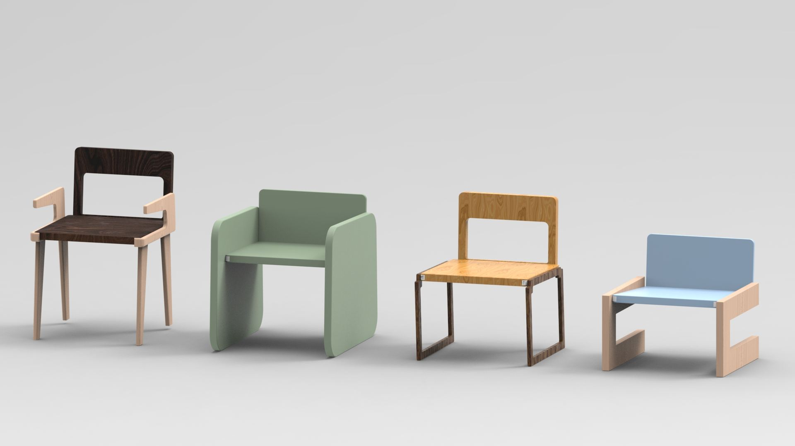
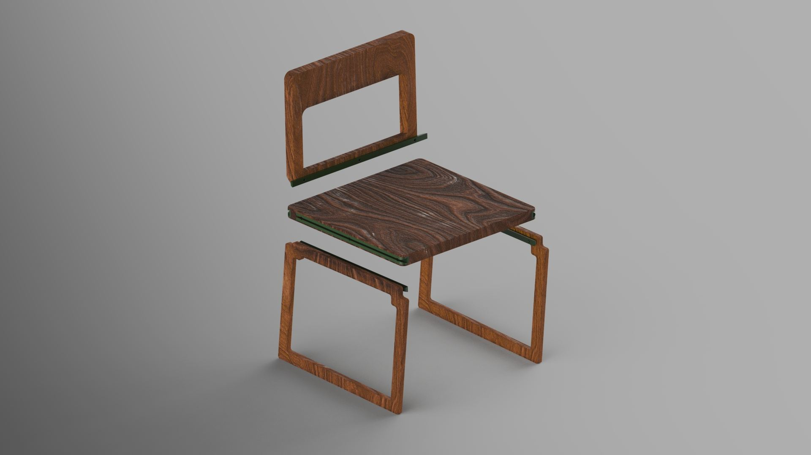
Exploded — shared connector interface between seat, backrest, and frame
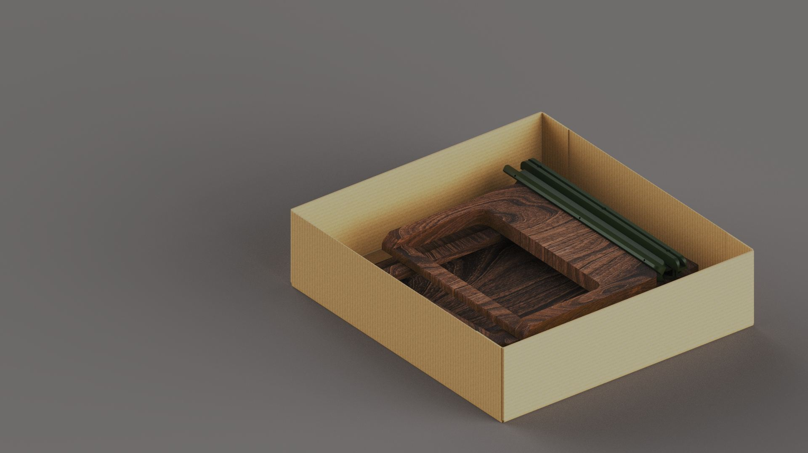
Ships flat — compact box, reduced volume
Reflection
This project proved that good design research changes what you design, not just why you design it. The connector strategy didn't come from aesthetics — it came from understanding exactly where hybrid production breaks down. That's the difference between a chair and a system.
Process


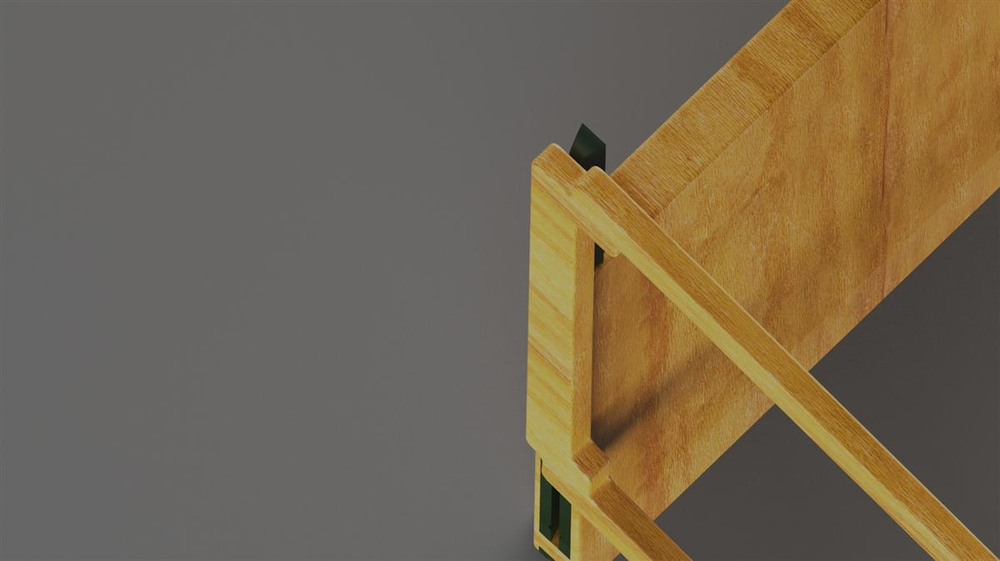

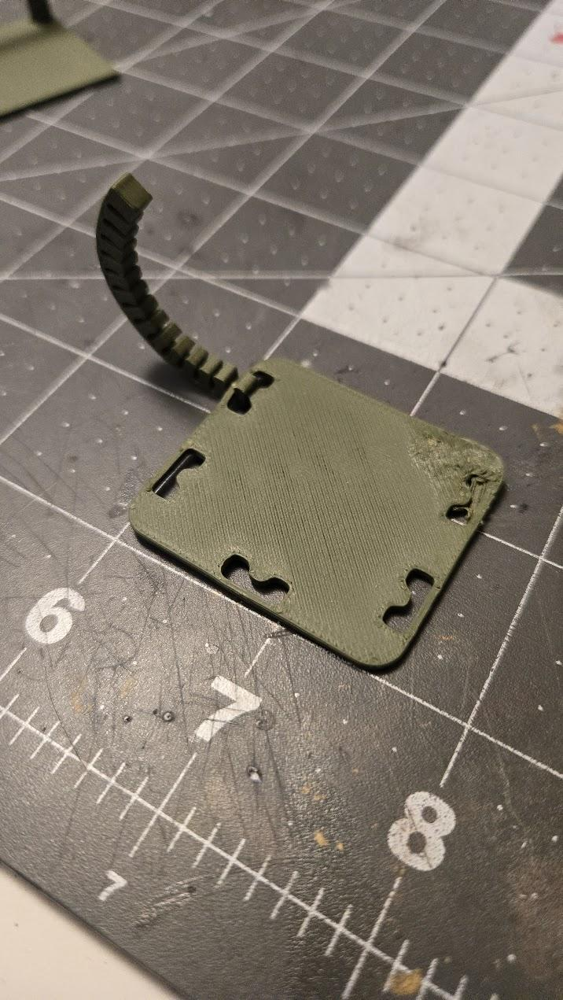
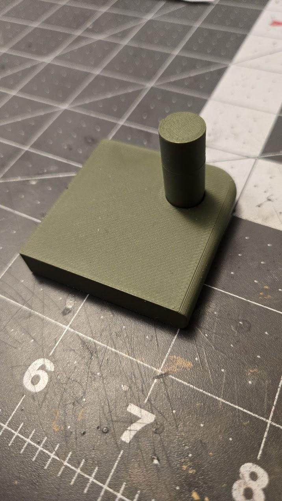

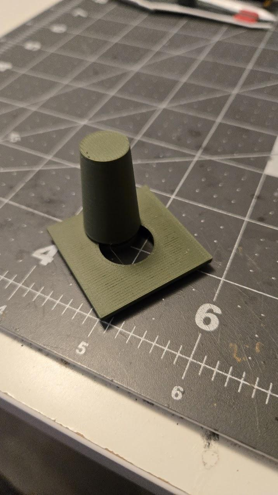